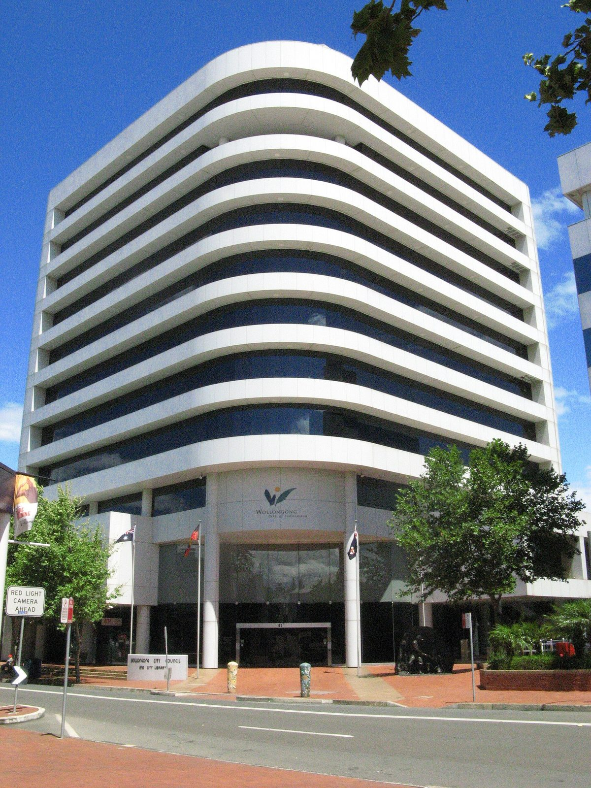

호주 울런공 시의회 '에너지 형평 틀' 만장일치 채택…주택 태양광 시 평균 35%, 가장 낮은 동네는 17.9%

세입자·저소득층·아파트 주민도 값싼 청정 전기 누리게 4대 원칙 세워…시 조사 "가구 거의 5분의 1이 에너지 곤궁 겪을 수 있어", 새 예산·사업은 정해지지 않아
호주 뉴사우스웨일스주 울런공 시의회가 10월 26일 밤 정례회의에서 노동당·자유당·녹색당·무소속 의원 전원 찬성으로 '울런공 에너지 형평 틀(Wollongong Energy Equity Framework)'을 채택했다. 지붕이 있거나 설비를 살 돈이 있는 가구만이 아니라 모든 주민이 청정 전기를 더 싸게 쓰게 하자는 방향을 담은 원칙 문서로, 형평한 사업 설계·에너지 이해력·옹호와 정책 활동·협력을 4대 원칙으로 세웠으며 새 예산이나 보조 사업이 정해진 것은 아니다. 시 '에너지 형평 평가' 조사는 울런공 가구의 거의 5분의 1이 소득의 10% 넘게 전기에 쓰는 '에너지 곤궁'을 겪을 수 있다고 추정했고, 소득의 11% 이상을 에너지에 쓰는 가구 비율은 워러웡 26%, 크링길라 21%, 버클리·벨람비·윈당-프림비 각 19% 순으로 높았다. 주택 태양광 보급률은 시 전체가 약 35%인 데 비해 벨람비 17.9%, 에이번데일 18.8%, 워러웡 19.3%에 그쳐, 저소득 가구·세입자·공공임대 세입자·아파트 주민이 가장 큰 장벽을 겪는 것으로 나타났다. 회의에서 자유당 라이언 모리스 의원이 공공임대가 가장 많은 벨람비 재개발 안내에 청정에너지 내용이 없다며 시의 옹호 활동을 제안하자, 노동당 리처드 마틴 의원은 주·연방 정부가 공공임대 3만7,500가구에 3억2,000만 호주달러를 들여 지붕 태양광·배터리·단열 등을 넣고 있고 2027년 6월까지 2만4,000가구를 마칠 계획이라고 답했다. 린다 캠벨 의원은 "환경 책임과 사회적 공정은 함께 가야 한다"고 말했고, 시는 앞으로 대학·기업·정부·비영리 단체에 이 틀의 서명 참여를 요청한다.
시민에너지 관점
주택 태양광이 시 평균 35%인데 공공임대가 몰린 동네는 17.9%에 그친다는 것은, 지붕 가진 가구가 요금 절감을 누리는 동안 세입자와 저소득층은 오히려 전환 비용을 떠안는 구조가 이미 굳어지고 있다는 뜻이다. 남의 집에 사는 사람에게 지붕 태양광은 애초에 닿지 않는다는 반론이 있지만, 바로 그래서 집 밖의 공동 설비에 주민이 함께 출자하고 수익을 나누는 길이 필요하며, 같은 호주 빅토리아주 헵번에서는 주민들이 협동조합을 꾸려 2011년 호주 첫 주민 소유 풍력발전을 돌리기 시작했다. 원칙 문서가 실제 전기요금 고지서를 바꾸려면 다음 단계는 공공임대 단지와 동네 단위의 주민 소유 발전이어야 한다. 국내 지자체도 에너지 복지를 요금 보조에서 끝내지 말고, 세입자와 저소득층이 발전 설비의 주인이 되는 구조로 넓혀야 한다.
출처: The Illawarra Flame 2026-10-27 Genevieve Swart 원문 보기
豪ウーロンゴン市議会、「エネルギー公平フレームワーク」を全会一致で採択…住宅太陽光は市平均35%、最も低い地区は17.9%
賃借人・低所得層・集合住宅の住民も安いクリーン電力を享受できるよう4原則を定める…市の調査「世帯のほぼ5分の1がエネルギー困窮に陥るおそれ」、新たな予算・事業は未定
オーストラリア・ニューサウスウェールズ州のウーロンゴン市議会は10月26日夜の定例会で、労働党・自由党・緑の党・無所属の全議員の賛成により「ウーロンゴン・エネルギー公平フレームワーク（Wollongong Energy Equity Framework）」を採択した。屋根を持つ世帯や設備を買う余裕のある世帯だけでなく、すべての住民がクリーンな電気をより安く使えるようにするという方向を示した原則文書で、公平な事業設計・エネルギーリテラシー・アドボカシーと政策活動・協力の4原則を掲げたが、新たな予算や補助事業が決まったわけではない。市の「エネルギー公平評価」調査は、ウーロンゴンの世帯のほぼ5分の1が所得の10%超を電気に費やす「エネルギー困窮」に陥るおそれがあると推計し、所得の11%以上をエネルギーに費やす世帯の割合はワラウォン26%、クリンギラ21%、バークレー・ベランビ・ウィンダン＝プリムビー各19%の順に高かった。住宅用太陽光の普及率は市全体で約35%なのに対し、ベランビ17.9%、エイボンデール18.8%、ワラウォン19.3%にとどまり、低所得世帯・賃借人・公営住宅の入居者・集合住宅の住民が最も大きな障壁に直面していることが分かった。会議では自由党のライアン・モリス議員が、公営住宅が最も多いベランビの再開発案内にクリーンエネルギーの記述がないとして市による働きかけを提案し、労働党のリチャード・マーティン議員は、州・連邦政府が公営住宅3万7,500戸に3億2,000万豪ドルを投じて屋根置き太陽光・蓄電池・断熱などを導入しており、2027年6月までに2万4,000戸を終える計画だと答えた。リンダ・キャンベル議員は「環境への責任と社会的公正は両立しなければならない」と述べ、市は今後、大学・企業・政府・非営利団体にこのフレームワークへの署名参加を呼びかける。
市民エネルギーの視点
住宅用太陽光が市平均35%なのに公営住宅が集まる地区では17.9%にとどまるということは、屋根を持つ世帯が料金の節約を享受する間に、賃借人や低所得層がむしろ転換のコストを背負う構図がすでに固まりつつあることを意味する。他人の家に住む人には屋根置き太陽光はそもそも手が届かないという反論もあるが、だからこそ住まいの外にある共同設備に住民がともに出資し収益を分け合う道が必要であり、同じオーストラリアのビクトリア州ヘップバーンでは、住民が協同組合をつくり2011年にオーストラリア初の住民所有の風力発電を動かし始めた。原則文書が実際の電気料金の請求書を変えるには、次の段階は公営住宅団地や地区単位の住民所有の発電でなければならない。韓国の自治体もエネルギー福祉を料金補助で終わらせず、賃借人や低所得層が発電設備の持ち主になる仕組みへと広げるべきだ。
出典: イラワラ・フレーム 2026-10-27 ジェネビーブ・スワート 原文を読む
澳大利亚卧龙岗市议会全票通过"能源公平框架"…住宅光伏全市平均35%，最低街区仅17.9%
确立四项原则，让租户、低收入家庭和公寓居民也能用上便宜的清洁电力…市调查称"近五分之一家庭可能陷入能源困境"，尚未确定新预算或项目
澳大利亚新南威尔士州卧龙岗市议会10月26日晚在例会上，以工党、自由党、绿党和无党派议员全体赞成，通过了"卧龙岗能源公平框架"（Wollongong Energy Equity Framework）。这是一份原则性文件，方向是让所有居民而不仅是有屋顶或有钱买设备的家庭，都能更便宜地使用清洁电力，确立了公平的项目设计、能源素养、倡导与政策活动、合作四项原则，但并未确定新的预算或补贴项目。市政府的"能源公平评估"调查估计，卧龙岗近五分之一家庭可能陷入把家庭收入10%以上花在电费上的"能源困境"；能源支出占收入11%以上的家庭比例，以沃拉旺26%最高，其次是克林吉拉21%，伯克利、贝兰比、温丹－普林比各19%。住宅光伏普及率全市约为35%，而贝兰比只有17.9%、埃文代尔18.8%、沃拉旺19.3%，低收入家庭、租户、公共住房租户和公寓居民面临的障碍最大。会上，自由党议员瑞安·莫里斯指出，公共住房最多的贝兰比改造项目介绍中没有清洁能源内容，提议市政府出面倡导；工党议员理查德·马丁回应说，州和联邦政府正投入3亿2,000万澳元，为3万7,500套公共住房安装屋顶光伏、家用电池和隔热等设施，计划到2027年6月完成2万4,000套。议员琳达·坎贝尔表示"环境责任与社会公平必须并行"，市政府接下来将邀请大学、企业、政府和非营利组织签署加入这一框架。
市民能源视角
住宅光伏全市平均35%，公共住房集中的街区却只有17.9%，说明在有屋顶的家庭享受电费节省的同时，租户和低收入家庭反而承担转型成本的格局已经逐渐固化。有人反驳说，住在别人房子里的人本来就够不着屋顶光伏，但正因如此，才需要让居民共同出资建设住宅之外的共有设施并分享收益；同在澳大利亚的维多利亚州赫本，居民组建合作社，于2011年让澳大利亚第一座居民所有的风电场投入运行。原则性文件要真正改变电费账单，下一步就必须是以公共住房小区和街区为单位的居民所有发电。韩国的地方政府也不应让能源福利止步于电费补贴，而要扩展为让租户和低收入家庭成为发电设施主人的结构。
来源: 伊拉瓦拉火焰报（The Illawarra Flame） 2026-10-27 Genevieve Swart 查看原文
Wollongong council unanimously adopts Energy Equity Framework as rooftop solar averages 35% citywide but only 17.9% in its lowest suburb
Four principles aim to give renters, low-income households and apartment residents access to cheaper clean power; council research says almost one in five households may face energy hardship, but no new budget or program has been set
Wollongong City Council in New South Wales, Australia, adopted the Wollongong Energy Equity Framework at its ordinary meeting on the night of October 26, with Labor, Liberal, Greens and independent councillors all voting in favour. The framework is a statement of principles aimed at making clean electricity cheaper for every resident, not only households with a roof or the money for a system, and it rests on four principles: equitable program design, energy literacy, advocacy and policy, and collaboration; it does not set any new budget or subsidy program. The council's Wollongong Energy Equity Assessment estimated that almost one in five local households may struggle with energy hardship, defined as spending more than 10% of household income on electricity, and the share of households spending 11% or more of income on energy was highest in Warrawong at 26%, followed by Cringila at 21% and Berkeley, Bellambi and Windang-Primbee at 19% each. Rooftop solar uptake is around 35% across the city but only 17.9% in Bellambi, 18.8% in Avondale and 19.3% in Warrawong, with low-income households, renters, social housing tenants and apartment dwellers facing the biggest barriers. At the meeting, Liberal councillor Ryan Morris said the state's renewal information for the Bellambi estate, which has the most social housing, contained nothing on clean energy and suggested council advocacy, while Labor councillor Richard Martin replied that the state and federal governments are spending A$320 million to fit rooftop solar, batteries, insulation and other upgrades to 37,500 social homes, with 24,000 due by June 2027. Councillor Linda Campbell said "environmental responsibility and social fairness must go hand in hand," and the council will now invite universities, businesses, government and not-for-profit groups to become signatories to the framework.
Citizen Energy View
Rooftop solar at 35% citywide but just 17.9% in the suburb with the most social housing means a pattern is already setting in where households with roofs enjoy lower bills while renters and low-income residents are left carrying the cost of the transition. Some will say rooftop solar is simply out of reach for people who live in someone else's home, but that is exactly why residents need a way to invest together in shared generation beyond their own homes and share the returns, as residents of Hepburn in Victoria did when they formed a co-operative and in 2011 began running Australia's first community-owned wind farm. For a statement of principles to change actual power bills, the next step has to be resident-owned generation at the level of social housing estates and neighbourhoods. Korean local governments, too, should not let energy welfare stop at bill subsidies, and should widen it into arrangements where renters and low-income households become owners of generating assets.
Source: The Illawarra Flame 2026-10-27 Genevieve Swart Read the original